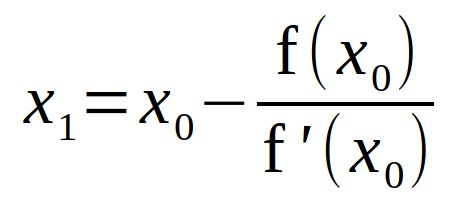
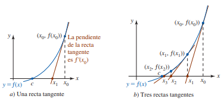

El método de Newton (conocido también como el método de Newton-Raphson o el método de Newton-Fourier) es un algoritmo para encontrar aproximaciones de los ceros o raíces de una función real. También puede ser usado para encontrar el máximo o mínimo de una función, encontrando los ceros de su primera derivada.
El método de Newton es un método abierto, en el sentido de que no está garantizada su convergencia global. La única manera de alcanzar la convergencia es seleccionar un valor inicial lo suficientemente cercano a la raíz buscada. Así, se ha de comenzar la iteración con un valor razonablemente cercano al cero (denominado punto de arranque o valor supuesto). La relativa cercanía del punto inicial a la raíz depende mucho de la naturaleza de la propia función; si ésta presenta múltiples puntos de inflexión o pendientes grandes en el entorno de la raíz, entonces las probabilidades de que el algoritmo diverja aumentan, lo cual exige seleccionar un valor supuesto cercano a la raíz. Una vez que se ha hecho esto, el método linealiza la función por la recta tangente en ese valor supuesto. La abscisa en el origen de dicha recta será, según el método, una mejor aproximación de la raíz que el valor anterior. Se realizarán sucesivas iteraciones hasta que el método haya convergido lo suficiente.
Los ceros de una función polinomial f de grado 4 o menos (es decir, las raíces de la ecuación f (x) = 0) siempre pueden encontrarse por medio de una fórmula algebraica que expresa la incógnita x en términos de los coeficientes
de f. Por ejemplo: ecuación de grado 2.
ax 2 + bx + c, a ≠ 0
Suponga que f es diferenciable y suponga que c representa alguna raíz real desconocida de f (x) = 0:
 
Hay problemas con el método de Newton.
i) Es necesario calcular f '(x). Aunque no sobra decirlo, la forma de f '(x) podría ser formidable cuando la ecuación f (x) = 0 es complicada.
ii) Si la raíz c de f (x) = 0 está próxima a un valor para el cual f '(x) = 0, entonces el denominador en (3) tiende a cero. Esto demanda el cálculo de f (xn) y f '(xn) hasta un grado superior de precisión. Para esto se requiere una computadora.
iii) Es necesario encontrar una ubicación aproximada de una raíz de f (x) = 0 antes de escoger a x0. Concomitante a esto son las dificultades usuales para graficar. Pero, lo
ques peor, la interación de (3) puede no converger para una x0 escogida de manera imprudente o a ciegas.
iv) Ahora, algunas buenas nuevas. A pesar de los problemas que acaban de analizarse, la ventaja más importante del método de Newton es que cuando converge a una raíz c de una ecuación f (x) = 0,
suele no hacerlo de manera rápida. Puede demostrarse que en ciertas circunstancias, el método de Newton converge cuadráticamente; es decir, el error en cualquier paso en el cálculo no es mayor que un múltiplo constante del cuadrado del error
en el paso en el cuadrado del error en el paso precedente. En términos generales. esto significa que el número de cifras de precisión puede (aunque no necesariamente) duplicarse en cada paso.